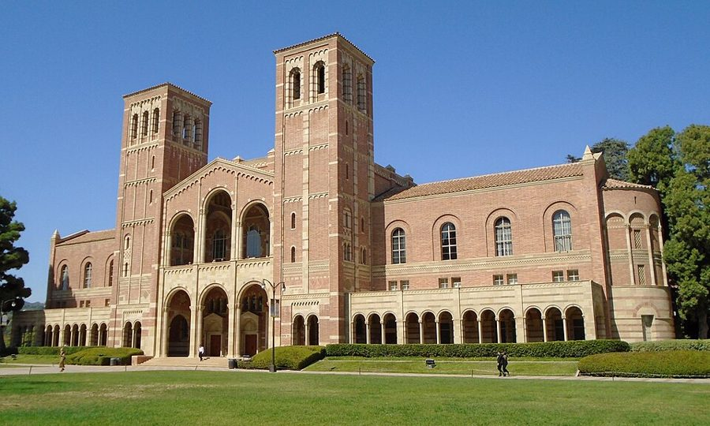
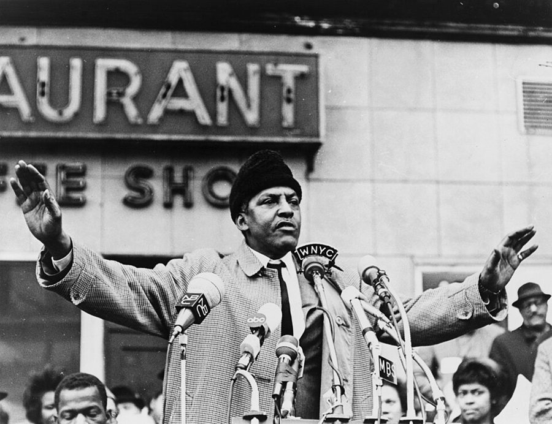

这一章在做什么
1969 年 6 月到 1972 年 1 月，三十九岁到四十一岁。离开康奈尔后，他先去洛杉矶教了一个暑期班，回东岸在布兰迪斯待一年，再搬到 U.C.L.A. 拿到终身教职。
这几年他头一次不为饭碗发愁，也头一次公开写种族和教育。读的时候留意三条线怎么交替：工作、写书、儿子。
1969 1970 1971 1972
38 岁 39 岁 40 岁 41 岁
在哪
康奈尔
布兰迪斯
U.C.L.A.（副教授，有终身教职）
U.C.L.A. 暑期班
事情
Say’s Law 打完
6 月女儿出生
12 月杂志文章
1 月去斯坦福
年龄是那年年初的岁数，他的生日在 6 月 30 日。
本站示意图。这一页覆盖的两年半。色条是他领工资的学校，下面四个点是书里给了年月的事。
出场的人
这一页的名字多半只出现一两次，听书时一晃就过去。真正要记住的是头一个。
Walter Williams 男，U.C.L.A. 经济系博士生 自己找上门来的高个子黑人学生。第 13 节时已到华盛顿的 Urban Institute。下一页起常出现。
my son 名字这一页没出现，是 John 1969 年四岁，话还不多。第 1、2、9 节各有一段写他。女儿 1970 年 6 月出生。
Lonnie /ˈlɑːni/，男 只在第 1 节出现一次，住俄亥俄。这里没交代是谁，后面的章节才说是他的亲兄弟（第 11 章称他为弟弟）。
Kenneth Arrow /ˈæroʊ/ 当时最有声望的经济学家之一。打电话请他进 American Economic Review 的编委会。
Joseph S. Berliner /ˈbɜːrlɪnər/ 布兰迪斯经济系主任，研究苏联经济。作者少有地只说了好话。
Al my radical friend Al 第 6 章起反复出现的左派朋友，在大学教书。第 10 节他来电话改口。
Birdie、Lacy、Ruth 第 11 节 二十年没通音讯的家里人。Mom（养母）已去世，Birdie 夫妇住在她 145 街的旧公寓里，Ruth 住布朗克斯。
Jimmy、Ruth Ellen Birdie 和 Lacy 的孩子 Jimmy 在第 2 章出生。Ruth Ellen 是他妹妹，这里只提一句她已成年。
两个 Ruth。 第 11 节开车去布朗克斯看的 Ruth 是 Birdie 的姐姐；Ruth Ellen 是 Birdie 的女儿，随姨妈取的名。路边训人的是姐姐 Ruth。
两通霍华德的电话都没有名字。 第 7 节和第 12 节打电话来的人、「原来那个系主任」、代理系主任、另一个候选人，作者一个名字也没给。不必去猜。
Walter Williams，2013 年在得克萨斯理工大学演讲。这是书里那次敲门四十多年以后，他已是乔治梅森大学的经济学教授。Free Market Institute at Texas Tech University，CC BY 3.0，维基共享资源
背景：作者默认你知道的事
章名是一首歌，路上还有一首
California, Here I Come 是 1924 年 Al Jolson 唱红的歌，下一句是 right back where I started from ，唱的是回老家。作者却是头一回去加州。
路上想起的是 1946 年的 Route 66 ，歌词从东往西报站名，他停过的 St. Louis、Joplin、Oklahoma City、Amarillo 都在里面。66 号公路从芝加哥通到洛杉矶，是当年开车去加州的老路。
伊萨卡
华盛顿
俄亥俄
圣路易斯
乔普林
俄克拉何马城
阿马里洛
大峡谷
洛杉矶
盐湖城
夏延
奥马哈
芝加哥
罗切斯特
6 月去程：圣路易斯以西走 66 号公路
8 月底回程：北线，赶路
本站示意图，位置按经纬度大致摆放。只画了书里点到名的地方；去程中间还经过印第安纳波利斯。
布兰迪斯大学
布兰迪斯校园里的 Usen Castle，2006 年以前拍摄。这座仿中世纪的城堡比学校本身还老，是校园的标志。Mike Lovett，公有领域，维基共享资源
Brandeis University，1948 年建校，在波士顿西边的 Waltham。由美国犹太人社团出资创办，招生不分教派，校名取自第一位犹太裔最高法院大法官 Louis Brandeis。
学生里犹太人多，第 4 节那段关于「犹太学生」的对话背景在此。波士顿一带有不少爱尔兰裔聚居的街区，第 3 节租的两处房子都在这样的地方。
副教授，有没有 tenure
助理教授 康奈尔
副教授 布兰迪斯，无 tenure
副教授 U.C.L.A.，有 tenure
正教授 full professor
这一步之后 学校不能随意解聘
本站示意图。这一页里他走了中间两步，用了一年。
美国大学的教职分三级：assistant、associate、full professor。终身教职（tenure）是另一回事，拿到以后学校不能随意解聘；多数人升副教授时一并拿到，也有先给职称、过几年再评的。
招聘集中在冬春（hiring season），秋天到岗。第 5 节他觉得难堪，是因为答应 U.C.L.A. 太晚，布兰迪斯来不及补人。
U.C.L.A. 和「芝加哥来的人」

U.C.L.A. 的 Royce Hall，1929 年启用的四座最早的校舍之一，2019 年拍摄。他说这是他见过的最漂亮的校园。Beyond My Ken，CC BY-SA 4.0，维基共享资源 U.C.L.A. 是加州大学洛杉矶分校，公立，在洛杉矶西区的 Westwood。芝加哥大学经济系以弗里德曼、斯蒂格勒为代表，信市场、重证据，讨论会上当面穷追猛打是家常便饭。
作者的博士就是在那里读的（第 5、6 章）。第 5 节的求职报告被围攻，旁人看着像敌意，在这群人里是看得起你。
三本书和一篇文章
Say’s Law 由博士论文扩成，讲「萨伊定律」的学说史。萨伊是 19 世纪初的法国经济学家，这条定律常被概括成「供给创造自己的需求」。
Economics: Analysis and Issues 是入门教科书，出版方 Scott, Foresman 是出课本的大社。Black Education: Myths and Tragedies 是 1970 年 12 月《纽约时报杂志》那篇文章引出来的；这份杂志随周日的报纸附送，读的人很多。
第 1 节点到名的三个人

Bayard Rustin，1965 年，对着一排话筒讲话。Stanley Wolfson，New York World-Telegram and the Sun，公有领域，维基共享资源 Bayard Rustin /ˈbaɪərd ˈrʌstɪn/，民权运动的老组织者，1963 年华盛顿大游行由他一手调度。到 1960 年代末，他公开反对黑人分离主义。
Joseph Alsop /ˈɔːlsəp/，华盛顿的老牌专栏作家，文章同时登在全国很多家报纸上。Kenneth Arrow ，1972 年获诺贝尔经济学奖。American Economic Review 是美国经济学会的会刊。
留个记号：后面还会回来
这一页里作者自己插了几句「后来」的话，另有两条从前面接过来的线。
「不是我的学生」 第 1 节 介绍 Walter Williams 时，他特意加了一句后来媒体怎么说他俩的关系。这个人后面几章常出现，记住两人是怎么认识的。
「没想过再写这个题目」 第 1 节 给 Rustin 的小册子写了两页，他说当时以为就此一次。留意这句话到第 8 节、第 13 节之后还剩多少。
邻居的那件礼物 第 2 节，接第 7 章 第 7 章写过儿子迟迟不开口说话。这里是外人怎么看这件事，第 9 节是另一面。儿子这条线后面还会长。
再也没有断过联系 第 11 节 第 3 章他离家，和纽约的家人疏远。这里接上了，他说此后一直到他们去世都没再断。
头一次走进胡佛研究所 第 13 节 他说自己当时对这个地方几乎一无所知。记住窗户是什么样子。
词与短语
词条按书里出现的顺序排，小标题是原书用 • • • 隔开的各节。斜体小字是那句话里的几个词，在 Kindle 里搜它就能跳到那一句。单个的生词长按就能查，这里收的主要是词典帮不上忙的。
第 1 节 · 开车去加州
live up to its reputation
… to live up to its reputation. …
名副其实
one of the few ：他觉得多数名胜都名不副实。
xylophone
… learned to play a xylophone, at …
木琴（这里是儿童敲的小琴）
读 /ˈzaɪləfoʊn/，x 发 z 的音，听书时认不出来。
by ear
… tunes he had heard by ear. …
不看谱，凭耳朵听来就弹
play by ear 。引申义「见机行事」也从这里来。
arrive at conclusions
… had already independently arrived at similar …
（各自）得出结论
arrive at 后面接结论、决定，不是地点。independently 是这句的重音。
syndicated columnist
… conversation with syndicated columnist Joseph Alsop, …
文章同时卖给多家报纸刊登的专栏作家
syndicate 是代理分发稿件的公司。美国特有的行当，作者自己后来也是。
toss off
… I tossed off a couple of …
随手写出来
第 6 节的信里又用了一次，说的是那本教科书。
much less
… subject again, much less do research …
更不用说
前面是否定：没想过再写，更没想过去研究。
official organ
… the Association’s official organ and the …
机关刊物，会刊
organ 这里和器官、风琴都无关。
taken aback
… He was somewhat taken aback by …
愣了一下，没料到
look a gift horse in the mouth
… look gift horses in the mouth. …
对白送的东西挑三拣四
看马的牙口能知道年龄。谚语：别人送的马，别掰开嘴看。
it came out that
… it came out that there was …
这才露出实情
对方起先没说，是被问出来的。
第 2 节 · 一件临别礼物
summer romance
… seem almost like a summer romance. …
夏天里一场注定短暂的恋爱
比喻。说的是他和加州，不是和哪个人。
loom on the horizon
… the fall loomed on the horizon. …
（秋天）在前头一点点逼近
loom 用于让人不安的东西。fall 是美式的「秋天」，这里指秋季学期。
upstate New York
… move from upstate New York to …
纽约州的北部内陆
指纽约市以外的大片地方。康奈尔所在的伊萨卡离纽约市四五个小时车程。
retarded child
… that she had a retarded child. …
智力发育迟缓的孩子
1960 年代的通行说法。今天这个词被视为冒犯，改说 intellectual disability。
a boy like mine
… you have a boy like mine,” …
跟我儿子一样的男孩
她的意思是：也有智力障碍。她是好意。
had been saying
… what my neighbors had been saying. …
（这些年）背后一直在说的
过去完成进行时：在这之前很长一段时间里持续在说。
第 3 节 · 租房
miscellaneous harassment
… two weeks of miscellaneous harassment by …
各种各样的刁难
美音多读 /həˈræsmənt/，重音在第二个音节。
a fact of life
… but still a fact of life. …
躲不掉、只能认了的现实
down South
… that used to happen down South. …
南方那边
used to 是「从前常有、现在没了」。两样加起来是同事们的想法：那是别处、过去的事。
that’s nothing compared to
… that’s nothing compared to what happened …
比起……这根本不算什么
邻居是在宽慰他，却等于说：这条街对谁都这样。全节的包袱在这一句。
第 4 节 · 布兰迪斯的图书馆
a gem of a human being
… and a gem of a human …
难得的好人
a A of a B：像 A 一样的 B。gem 是宝石。
as a courtesy
… a joint appointment as a courtesy, …
出于礼节（挂个名）
joint appointment 是两个系合聘。这里只是名义上的，工资全由经济系出。
without tenure
… an associate professor without tenure, but …
没有终身教职
见上面「副教授，有没有 tenure」。tenure 读 /ˈtenjər/。
rescued
… and some were rescued by a …
被「搭救」了
反话。搭救的办法是下半句：打电话让教授改分。
“reconsider” bad grades
… to “reconsider” bad grades or to …
「重新考虑」一下那个低分
引号是作者加的冷笑。这一页里凡是他给单个词加引号的地方，都要这样读。
amount to the same thing
… amounted to pretty much the same …
说到底是一回事
pretty much = 差不多。
shape up or ship out
… to shape up or ship out. …
要么像个样子，要么走人
二战时美军的口头禅，押头韵。他在第 4 章当过兵，第 5 章在哈佛头一年也挨过这样的话。
studying away
… many white students studying away. …
埋头学个不停
动词 + away：一直不停地做。和「离开」无关。
confrontation
… a confrontation in the 1840s between …
当面的冲突
书里没说另一位是谁。本站推测是 1846 年马克思在布鲁塞尔和工人出身的魏特林（Weitling）那次争吵。
relevant
… to be “relevant” to minority issues. …
「有关系」「切身」
1960 年代学生运动的口号：课程要 relevant。他加引号，是借对方的词说相反的意思。
Only twice as well?
… “Only twice as well?” I said. …
才好一倍？
反问，不是安慰。见下面「值得停下来的句子」。
第 5 节 · 洛杉矶来的聘书
professionally typed
… had been professionally typed and was …
花钱请打字员誊清
没有电脑的年代，投稿前要付钱请人把手稿打成干净的定稿。
send it around
… begin sending it around to university …
一家一家投出去
university press 是大学出版社，press 不是新闻界。
do not operate at breakneck speed
… do not operate at breakneck speed, …
办事可不算神速
往轻里说：慢得要命。breakneck 是「快得能摔断脖子」，第 6 节他用同一个词说自己赶教科书。
give a talk
… come out, give a talk, and …
做一场学术报告
美国大学招教员的固定环节，叫 job talk：当着全系讲自己的研究，接受提问。
anxious to
… they were anxious to get a …
急着想要
后面接 to do 时是「迫切」，不是「焦虑」。
These guys love Tom
… “These guys love Tom. Of course …
这帮人喜欢他喜欢得很
全节的反转。围攻是因为把他当回事。
hiring season
… late enough in the hiring season …
一年里集中招人的那段时间
gracious about it
… the faculty were gracious about it …
在这件事上很大度
本来有理由不高兴，却客气地成全了。
with goodwill all around
… institution with goodwill all around, and …
各方都和和气气
前半句 For the first time 是自嘲：回想一下他前几次是怎么离开一所学校的。
第 6 节 · 两本书的命
advance
… offered me a $5,000 advance …
预付的版税
名词。书还没写完，出版社先付一笔，日后从版税里扣。
named for
… she was named for Lorraine Hansberry. …
随……取名
美式，等于 named after。Hansberry 是黑人剧作家，写过 A Raisin in the Sun ，1965 年去世。第 6 章提过他们去看她的戏。
principles book
… My principles book—tossed off during …
那本入门教科书
经济学入门课叫 Principles of Economics，教材也就简称 principles book。
laudatory rejections
… is still collecting laudatory rejections. …
满纸夸奖的退稿信
矛盾修辞。collecting 也是玩笑：像集邮一样攒退稿信。laudatory 读 /ˈlɔːdətɔːri/。
第 7 节 · 霍华德来电
opening bid
… Their opening bid was 50 percent …
头一口开的价
拍卖用语。暗示还能再往上谈。
awfully late
… This is awfully late in the …
实在太晚了
awfully = very，和「可怕」无关。
whoever was left over
… hire whoever was left over during …
别人挑剩下的人
leftovers 是剩菜。他这一问，问的是这个系主任有没有实权。
despicable
… a despicable human being …
卑劣的
读 /dɪˈspɪkəbl/。对比第 4 节的 a gem of a human being ，同一个句式的两头。
acting chairman
… The acting chairman was a very …
代理系主任
acting + 职务 = 代理，和表演无关。
name recognition and little more
… with name recognition and little more. …
除了有点名气，别的没什么
说的是他自己。
for our emotional good
… too much for our emotional good, …
对我们的心理没好处
good 是名词：益处。too much for one’s own good 是固定说法。
第 8 节 · 那篇文章
how it would be “perceived”
… over how it would be “perceived.” …
外头会「怎么看」
不问对不对，只问观感。作者拿它和下一句系主任的话对照。
guts
… have the honesty and guts to …
胆量
本义是肠子。口语，开会时用这个词算很直了。
haunted by
… I was still haunted by what …
心里放不下
本义是闹鬼、鬼魂缠身。
on the racial front
… going on, on the racial front, …
在种族这一方面
front 是战线。第二个 on 属于这个短语，逗号不是印错。
fit a profile
… some sociological or ideological profile. …
符合某种「画像」
profile 是一组预设的特征，比如出身贫民区。
talk sense to
… vain efforts to talk sense to …
跟……讲道理
vain 这里是「白费的」，不是虚荣。
on a binge
… were on some ideological binge, or …
正在（意识形态的）兴头上，收不住
binge 本指连喝几天的酗酒。读 /bɪndʒ/。
with it
… just wanted to be “with it.” …
跟得上潮流
1960 年代的俚语，所以加了引号。
vehement denials
… contained vehement denials that these things …
激烈的否认
文章没点校名，康奈尔的校报第二天就出来否认。可笑在这里。vehement 读 /ˈviːəmənt/，h 不发音。
the in-group
… other members of the in-group were …
圈内人，当权的那一拨
semiliterate
… a long, semiliterate letter from an …
文理半通不通的
一封向大家保证学术标准没降的信，自己写得半通不通。
substantiate my charges
… the paper, substantiating my charges and …
证实我的指控
charge 这里是指控，不是收费。
第 9 节 · 里程表
rocky
… had a rocky first term in …
磕磕绊绊，很不顺
下一页还会再见到这个词。
odometer
… the mileage on the odometer when …
里程表
读 /oʊˈdɑːmɪtər/，重音在第二个音节。美国车显示英里，最后一位是十分之一英里。
off by one
… answer could be off by one. …
差一
程序员熟悉的那个 off-by-one。这里的原因是小数位被截掉了。
take to it
… and he took to it immediately. …
一学就上手，而且喜欢
前面的 With some reluctance ：他本来觉得六岁学小数太早。
freeway
… down the Santa Monica Freeway, he …
（不收费的）高速公路
加州的叫法，东岸多说 highway、turnpike。这条是 10 号州际公路在洛杉矶西段的名字。
第 10 节 · Al 改口
so damned right
… you were so damned right in …
对得让人来气
damned 只是加强语气。I hate to say it ：真不想承认。
under-prepared students
… of those under-prepared students.” …
「基础不足」的学生
当时校方的委婉说法。两句以后 Al 自己换了一个不委婉的词。
learn a trade
… some junior college learning a trade, …
学一门手艺
trade 是技工行当。junior college 是两年制的社区学院。
get out of the room alive
… never get out of the room …
活着走出教室
夸张。要听出来的是：一个激进派教授私下说的和课堂上敢说的是两回事。
第 11 节 · 给 Birdie 打电话
subdued, if not dispirited
… voice sounded subdued, if not dispirited. …
低沉，甚至可以说没精打采
A, if not B：至少是 A，说不定到了 B。不是「如果不」。
it was all I could do to
… all I could do to hold …
我好不容易才（忍住）
字面是「我能做到的也就是……」。
of old
… sounded like the Birdie of old. …
从前的（那个 Birdie）
放在名词后面，书面语。
had long since died
… Mom had long since died, and …
早就去世了
long since = 很久以前就已经。养母的死，全书就这半句。
the big sister
… always the big sister, aren’t you?” …
当姐姐的（派头）
两人这时都是六七十岁的老太太了，还是姐姐管着妹妹。
lose touch
… We never lost touch again as …
断了联系
上一句是 in touch （保持联系）。
第 12 节 · 霍华德又来电
a hustler peddling racial hype
… a classic hustler peddling racial hype. …
靠种族话题炒作混饭吃的人
hustler 是靠嘴皮子捞好处的人，peddle 是兜售，hype 是吹出来的声势。三个词都是贬义。
establishment foundation
… white liberal establishment foundation. …
体制内的大基金会
the establishment 是掌握资源和话语权的那个圈子；foundation 是出钱资助的基金会，不是「基础」。
know what was what
… I would know what was what …
心里有数，知道实情如何
turn mediocrity into disaster
… who would turn mediocrity into disaster? …
把平庸变成灾难
顺带给现状定了性：眼下是平庸。
speak volumes about
… the department chairmanship spoke volumes about …
很能说明……
volumes 是一卷卷的书：不用多说，这一件事就够了。
save Howard from itself
… hope of saving Howard from itself. …
把霍华德从它自己手里救出来
save 某人 from himself ：拦着他别害了自己。
第 13 节 · 去斯坦福看看
academic limbo
… long years in academic limbo now …
在学术界不上不下、悬着的状态
limbo 原是天主教说的地狱边缘：既没得救也没定罪。指他没有博士学位、没有终身教职的那些年。
scholars of distinction
… was for scholars of distinction, in …
有名望的学者
后面的 in other words 是自嘲：也就是说，眼下还轮不到我。
in the pipeline
… stuff I had in the pipeline …
已经交出去、还没出来的（稿子）
boarded up
… of its buildings were boarded up, …
用木板钉死了
玻璃被砸了，先钉木板封上。
sins of commission and omission
… sins of commission and omission. …
做了不该做的，和该做的没做
基督教讲罪的两种分法。拿来说学生骂教授，是调侃。
“reasonable” compromises
… one of those “reasonable” compromises so …
所谓「合情合理」的妥协
又是带引号的反话。妥协的内容是：把音量调小一点接着骂。
harangue
… the remainder of their harangue. …
长篇大论的训斥
读 /həˈræŋ/，词尾的 ue 不发音。
supinely
… at how supinely they were taking …
逆来顺受地
supine 本义是仰面躺着。读 /suːˈpaɪnli/。take it 是忍着、受着。
silverware
… and took the silverware away. …
刀叉勺
美国把餐具统称 silverware，不一定是银的。
told me all I needed to know
… told me all I needed to …
有这一句，就不用再看别的了
that 指教授那句回答，不是学生闹事。
broad hints
… with broad hints that an offer …
相当明显的暗示
broad 这里是「露骨、明摆着」。
值得停下来的句子
I felt so grateful within myself that she was wrong. But now I also knew what my neighbors had been saying.— 第 2 节，邻居送来她儿子喜欢的玩具之后。本站译：我心里庆幸她弄错了。可这下我也知道了邻居们一直是怎么说的。
两句话，两个方向。第一句朝里：他没有纠正她，只是在心里松一口气。第二句朝外，重音在 had been saying ：这位太太不是自己看出来的，是听来的，而且已经传了很久。
前面写儿子认路牌、弹钢琴，写得很细，都是为这两句垫的。作者没有写自己是气还是难过，就停在这里。
“Only twice as well?” I said. “When they work three times as hard?— 第 4 节，一个黑人学生沮丧地来问他之后。本站译：「才好一倍？人家可是下了三倍的功夫。」
学生说的是一个让他丧气的差距，作者的回答把它倒过来：按投入算，差距本该更大。这里有一个经济学家的习惯动作，先问投入再比产出。
他对这个学生不客气，但前文刚写过他愿意一次次陪这个学生聊。至于图书馆那一幕和这段对话该怎么评价，书外一直有争论，这里只需读懂他说了什么。
检查一下理解
先在心里答，再点开。答错的那题，回书里把那一节再读（或再听）一遍。
1. 作者拒绝 Arrow 的邀请，是因为觉得自己不够格吗？ 不全是。他先问了一句「上一次请两年没发表东西的人是什么时候」，问出来对方是想让编委会里有黑人。他拒绝的是按种族用两套标准这件事，所以后来还特地回电话说明不是冲着 Arrow 本人。
2. Walter Williams 是他的学生吗？ 不是。Williams 当时是 U.C.L.A. 的博士生，但没上过他的课，是听说两人看法相近自己找来的。作者强调两人是各自先得出相近的结论，然后才认识。
3. 第 2 节那位太太送玩具，她以为什么？作者从中得知了什么？ 她以为作者的儿子和她的孩子一样有智力障碍，所以送来自己儿子喜欢的玩具，是出于善意。作者由此知道，因为儿子迟迟不说话，邻居们私下早就这样认定了。
4. 在 U.C.L.A. 做报告时全系围攻他，那位行政人员看到的「敌意」是真的吗？ 不是。那是芝加哥出身的经济学家讨论问题的常态，越当回事越往死里问。系里的人回答说大家喜欢他，当然要聘。
5. 他那篇文章没点康奈尔的名，康奈尔的反应为什么被他叫作闹剧？ 因为没被点名的康奈尔第二天就在校报上激烈否认「这些事发生在本校」，等于自己认领。之后骂他的人里，为首的正是那些做法的推动者，这一点后来由招生委员会的两个人写信证实。
6. 霍华德两次请他当系主任，两次都没去，理由一样吗？ 不一样。第一次是时间：他已答应 U.C.L.A.，而且对方连正常招人的时间都保证不了。第二次他认真想了一周，因为不去的话另一个他很看不上的人可能上任；最后的结论是，会把这种人列入名单的学校，他去了也救不了，不值得再让全家搬一次。